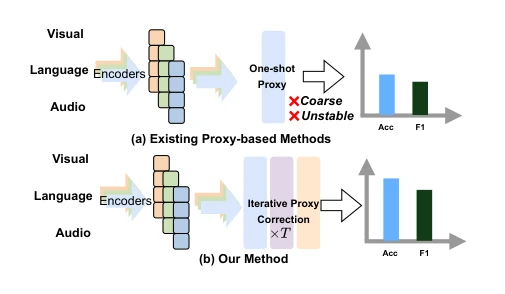
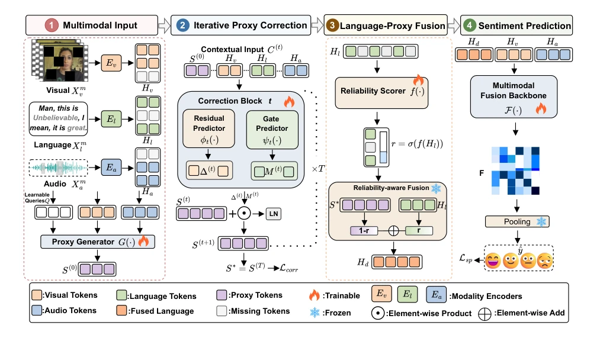
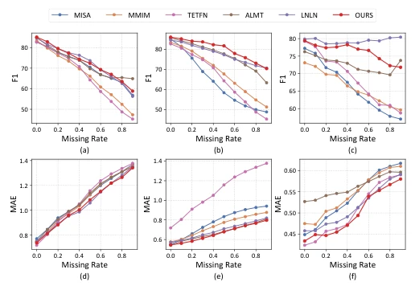
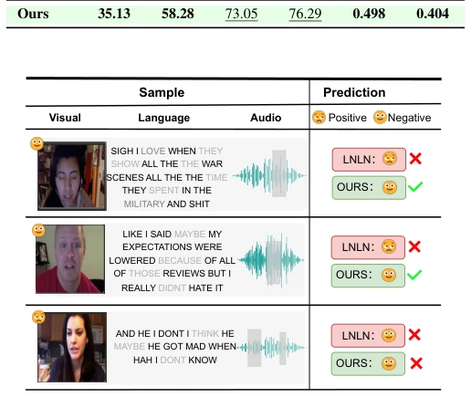

This paper teaches a lesson to the "filling the holes" work of incomplete multimodal sentiment analysis (MSA): do not rush to throw rough proxies directly into the fusion layer, otherwise it is "garbage in, garbage out". The authors keenly point out that existing methods (such as LNLN, etc.) conduct "one-time proxy construction", equivalent to letting an assistant who just woke up but is not yet clear participate in decision-making directly, where initial errors will amplify like a snowball in subsequent reasoning. The "iterative proxy correction" framework proposed in this paper is essentially equipping this assistant with a "daily morning meeting" mechanism, polishing the proxy step-by-step through gated residual correction until it is reliable enough to start working. Although experiments achieve top rankings on MOSI/MOSEI/SIMS, the core logic is actually very simple: since the language modality is broken, do not force it, first let audio-visual modalities help "fill in mentally", then correct repeatedly, and finally fuse weighted by credibility. However, whether this setting relying on complete language modality as an "anchor" during training remains robust in extreme missing scenarios is worth questioning.
Multimodal sentiment analysis (MSA) aims to infer emotional states by fusing linguistic, visual, and auditory cues, but in real-world scenarios, sensor failures, noise interference, or privacy restrictions often lead to modality missing or damage. Existing methods are mainly divided into two categories: reconstruction-based methods (such as [5]-[8]) attempt to recover missing signals, with high computational overhead and prone to distortion; representation-based methods (such as [9]-[11]) directly learn latent representations, among which language-centric methods (such as [12], [13]) assume text reliability, but fail when text is missing or noise is severe. To this end, proxy-based methods (such as [14], [15]) were proposed, utilizing non-language modalities to generate auxiliary representations to compensate for language information. However, as shown in Fig. 1(a), existing proxy methods mostly adopt the "one-time construction" paradigm, i.e., directly injecting into the fusion layer after generating the proxy. This paradigm implicitly assumes the initial proxy is reliable, but in fact, when input is damaged, the initial proxy is often rough, noisy, or incomplete. Introducing such imperfect proxies too early will lead to error propagation, seriously damaging the robustness of sentiment prediction. Therefore, there is an urgent need for a mechanism that can gradually correct proxy quality and avoid initial error amplification.

Fig. 1: Comparison between existing proxy-based methods and our iterative proxy correction method.
This paper proposes an Iterative Proxy Correction Framework, the overall process is divided into four stages: initialization, iterative correction, adaptive fusion, and prediction. First, for incomplete inputs, the model initializes a language-oriented proxy (Proxy) from non-language modalities (visual and auditory), rather than directly relying on damaged text features; Formula (2) shows the proxy is generated by concatenating learnable query tokens with non-language features and passing through a Transformer. Second, the core innovation lies in "iterative correction": the proxy is not generated at once, but updated through T-step iterations. At each step t, the model concatenates the current proxy, language, visual, and auditory features, utilizing the gated residual correction mechanism (Formula (4-5)) to calculate residual terms and update gates, gradually refining the proxy representation. This process is supervised by "Stage-wise Latent Correction Objective", utilizing complete language representations during training as semantic anchors (Formula (12)), ensuring the proxy gradually converges to the correct semantic space during the correction process. Finally, in the fusion stage, the model calculates the reliability score of the observed language representation (Formula (7)), and adaptively weights and fuses the corrected proxy and original language features based on this (Formula (8)), achieving "use if trusted, supplement if doubtful". The final fused features enter the multimodal reasoning backbone network for sentiment prediction.

Fig. 2: Overall architecture of the proposed method.
The authors conducted extensive experiments on three benchmark datasets MOSI, MOSEI, and SIMS, covering English and Chinese scenarios. Evaluation metrics include regression tasks (MAE, Corr) and classification tasks (Acc-2, Acc-5, Acc-7, F1). Experiments set missing rates from 0.0 to 0.9, simulating various incomplete scenarios. Results show that the proposed method outperforms strong baselines such as LNLN, MISA, MMIM on most metrics, especially performing more robustly under high missing rates (Fig. 3). Ablation studies (Table IV) confirm the effectiveness of each component: removing the proxy branch leads to a significant performance drop, removing iterative correction or correction loss also significantly weakens model performance, indicating that "iteration" and "correction objective" are crucial for improving proxy quality. Modality ablation (Table III) further verifies the dominant status of the language modality, and the complementary role of non-language modalities when missing. Case study (Fig. 4) intuitively demonstrates that under scenarios where LNLN fails, the model successfully corrects prediction results through multimodal complementarity.

Fig. 3: (a)–(c) show the F1 curves on MOSI, MOSEI, and SIMS. (d)–(f) show the MAE curves on MOSI, MOSEI, and SIMS.

Fig. 4: Case study on three MOSI samples. Our method correctly predicts the first two cases where LNLN fails, sug- gesting its advantage in handling incomplete multimodal cues. Both methods fail on the third case, revealing the difficulty of highly ambiguous samples.